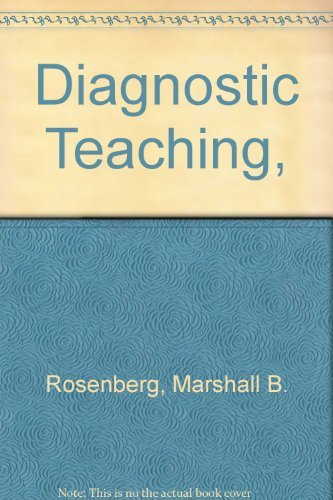
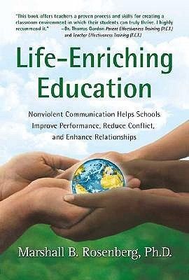
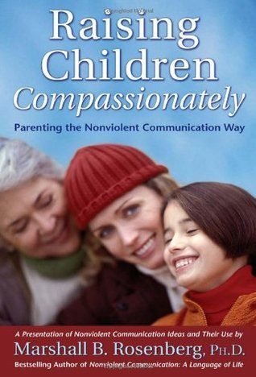
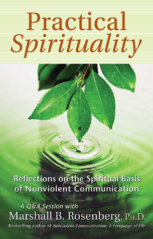
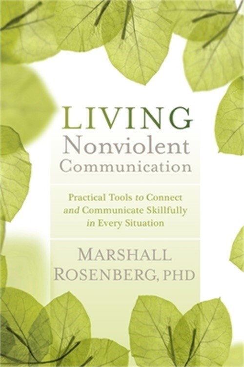

Коли ми чуємо про «Ненасильницьке спілкування» (ННС), багато хто уявляє собі стерильні корпоративні тренінги для HR-менеджерів або м'які поради для батьків. Проте історія цього методу та його творця написана не в тихих бібліотеках. Вона написана в епіцентрах расових бунтів, у таборах біженців, у в'язницях та на лініях фронту.
Народжений у вогні: Детройт і два головних запитання
Маршалл Розенберг народився у 1934 році в єврейській родині. У 1943 році, коли йому було 9 років, сім'я переїхала до Детройта. Всього за тиждень після їхнього приїзду в місті спалахнули одні з найстрашніших расових бунтів в історії США. За кілька днів на вулицях загинули понад 30 людей. Малий Маршалл три дні сидів замкнений у будинку, слухаючи крики людей, яких вбивали просто за вікном.
Коли бунти закінчилися і він пішов до нової школи, на нього чекав новий удар. Під час переклички вчитель вимовив його прізвище — «Розенберг». На перерві однокласники жорстоко побили його просто за те, що він єврей.
«Саме тоді в моїй голові сформувалися два запитання, які визначили все моє життя: Чому люди втрачають зв'язок зі своєю співчутливою природою і починають радіти насильству? І чому деякі люди, навіть у найжахливіших умовах (як Віктор Франкл у концтаборі), зберігають емпатію та людяність?»
Бунт проти психіатрії: Відмова від «білого халата»
Маршалл був блискучим студентом. Він здобув ступінь доктора філософії (Ph.D.) з клінічної психології, а його наставником був сам Карл Роджерс — легенда гуманістичної психології. Перед Розенбергом були відкриті всі двері: він міг сидіти у шкіряному кріслі, брати по 200 доларів за годину і виписувати рецепти.
Але він зненавидів традиційну психіатрію. Під час практики він зрозумів, що психіатрія часто використовується як інструмент соціального контролю. Він усвідомив, що ставити діагнози («невротик», «психопат», «шизофренік») — це форма насильства. Це спосіб сказати людині: «Ти зламаний, а я експерт, і я буду тебе лагодити».
Розенберг здійснив професійне самогубство: відмовився від прибуткової приватної практики, викинув діагностичні довідники і пішов працювати на вулиці, у школи та в'язниці, заявивши, що «лікувати потрібно не людей, а систему, в якій вони живуть».
Еволюція методу: Від ярликів до «Мови Жирафа»
Метод ННС не з'явився відразу. Розенбергу знадобилися десятиліття польової роботи та написання книг, щоб відточити його. Кожна його робота була роботою над помилками попередньої.

Diagnostic Teaching (Діагностичне навчання)
Найперша книга Розенберга, видана спеціалізованим видавництвом Special Child Publications. Вона була присвячена спеціальній педагогіці. Головний посил — перенесення фокусу з «поганого учня» на «невідповідний метод навчання». Розенберг одним з перших запропонував дивитися на проблемну поведінку як на сигнал про незадоволену потребу дитини.
Mutual Education: Toward Autonomy and Interdependence
Переломний етап. Розенберг повністю відмовляється від ярликів та діагнозів. Він вводить свій головний філософський прорив: концепцію «Влада З...» (Power with) замість «Влади НАД...» (Power over). Традиційна школа використовує покарання та оцінки, щоб змусити дітей слухатися. Розенберг заявляє, що вчитель та учень мають різний досвід, але абсолютно рівну людську гідність. Навчання має бути діалогом.
A Manual for "Responsible" Thinking and Communicating
Це «Святий Грааль» ННС — найперший, чорновий прототип методу (всього 55 сторінок). Написаний не від хорошого життя, а як екстрений польовий інструмент. У США йшов процес десегрегації шкіл, що супроводжувався масовими бійками та різаниною між білими та чорношкірими підлітками. Розенберг працював там медіатором і зрозумів: люди хочуть домовитися, але їхня мова фізично не дозволяє їм це зробити. У цій брошурі він вперше накидав знамениту 4-крокову модель.
From Now On (Відтепер)
Масштабна «робота над помилками». Розенберг зміщує фокус від «відповідальності» до «відсутності звинувачень і покарань». Він вводить надважливу різницю між істинними почуттями та «псевдопочуттями». Фрази на кшталт «Я відчуваю, що ти мене не поважаєш» — це не почуття, це приховане звинувачення. Також тут з'являється акцент на «емпатичному слуханні» — вмінні подумки перекладати агресію співрозмовника на мову його незадоволених потреб.
Історична паралель: ФБР vs. Розенберг (1975–1980)
Цікаво порівняти підхід Розенберга з розвитком державних структур переговорів у США. До початку 1970-х у ФБР не було переговірників (був лише штурм). Коли вони з'явилися, їх вчили методу «Стримування та переговори»: тягнути час, бути раціональними, шукати компроміс, відокремлювати емоції від проблеми.
Розенберг у цей же час на вулицях інтуїтивно намацав те, до чого ФБР (і Кріс Восс у книзі «Ніяких компромісів») прийде лише через 30 років — «тактичну емпатію». Розенберг вчив: емоції — це ключ. Базові людські потреби не підлягають торгу. Компроміс — це прихована поразка. Агресія — це не прояв зла, а трагічне вираження болю.
Ідеологічними братами Розенберга в ті роки були Карл Роджерс, Томас Гордон (автор «Я-висловлювань»), дипломат Джон Бьортон (Теорія людських потреб) та ідеологи Відновного правосуддя (Ховард Зер).
A Model for Nonviolent Communication
Лише 35 сторінок. Маніфест і кишеньковий довідник. Нарешті метод отримав своє історичне ім'я — Nonviolent Communication (NVC), надихнувшись концепцією «Ахімси» (ненасильства) Махатми Ганді. Книга розліталася на семінарах пачками. Залізобетонно закріпилися 4 кроки: Спостереження, Почуття, Потреба, Прохання.
Duck Tales and Jackal Taming Hints (Качині історії та поради з приборкання шакала)
У 51 рік Розенберг остаточно відмовився від академічної серйозності. Цей буклет — 24-сторінкова ілюстрована казка для дорослих. Розенберг зрозумів: щоб обійти психологічні захисти дорослих людей, потрібен гумор і метафори.
Біологія Жирафа і Шакала: Чому саме ці тварини? У жирафа найбільше серце серед наземних ссавців. Довга шия дозволяє бачити перспективу. А слина жирафа містить ферменти, які дозволяють йому перетравлювати колючки — це метафора емпатії, здатності вислухати колючі слова і не поранитися. Шакал же бігає низько, короткозорий (реагує реактивно) і харчується падлом — як наше Его, що живиться пошуком чужих помилок.
Чому ілюстрації були вісцеральними (і навіть сексуалізованими)? Малюнки художника-сюрреаліста Джерролда Картона в стилі андеграундних коміксів 70-х виглядають гротескно. Це було зроблено навмисно. Шакал — це метафора нашого Его, наших базових інстинктів домінування. Тілесність ілюстрацій символізувала наші нефільтровані, тваринні реакції у стресі. Тоді ННС ще не було «корпоративним і стерильним», воно було сирим і провокаційним.
13 років тиші, Руанда та «Швець без чобіт»
Після 1986 року в бібліографії Розенберга сталася пауза на 13 років. Він не писав, бо буквально жив на валізах (по 250 днів на рік у дорозі). Він працював у Нігерії з вождями племен, що вбивали одне одного. Він працював на Балканах після воєн у Югославії та в Руанді після геноциду.
У Палестині, під час виступу в таборі біженців, чоловік скочив і закричав йому: «Вбивця! Дітовбивця!» (через те, що Маршалл — американець). Розенберг не став захищатися. Він 20 хвилин емпатично перекладав лють чоловіка на мову потреб («Ви в розпачі, бо хочете підтримки і свободи?»). У підсумку цей же чоловік запросив Маршалла до себе на вечерю.
Сімейна драма: При цьому в особистому житті Маршалл був складною людиною. Він був одружений тричі. А коли він намагався застосовувати перші напрацювання ННС на своїх дітях, вони відчували фальш. Його син якось сказав: «Тату, будь ласка, просто нагримай на мене як нормальний батько, досить використовувати на мені цю психологічну хрінь!» Це навчило Маршалла, що ННС не можна використовувати як інструмент маніпуляції.
Nonviolent Communication: A Language of Compassion / Life
Magnum Opus. Головний бестселер. Книга на 200+ сторінок, яка вирішила «проблему робота». Розенберг пояснив: алгоритм — це ніщо без правильного наміру. Якщо ви використовуєте 4 кроки, щоб змусити людину зробити по-вашому — це насильство. Мета ННС — створити якість зв'язку, за якої рішення знайдеться само.
Він також ввів концепцію Самоемпатії (Self-Empathy): неможливо давати емпатію іншим, якщо ти всередині повен самокритики. Книгу випустило спеціально створене видавництво PuddleDancer Press, щоб захистити бренд.
Епоха «Спін-оффів» (2003–2005)
Люди почали питати: «А як застосувати ННС конкретно до дітей? А до гніву?». І Розенберг (через транскрипти своїх лекцій) випускає серію модульних брошур-додатків:

Life-Enriching Education
Повернення до витоків. Розенберг називає традиційні школи «фабриками Шакалов». Він жорстко критикує оцінки та нагороди як форму насильства і зовнішньої мотивації, що вбиває радість пізнання.

Raising Children Compassionately
Вводить поняття «захисне застосування сили»: фізичну силу до дитини можна застосовувати лише щоб врятувати її (висмикнути з-під авто), але ніколи — щоб покарати.
The Surprising Purpose of Anger
Абсолютний хіт. Гнів не треба придушувати чи «видихати». Гнів — це сигналізація, подарунок, який кричить про те, що ваша життєво важлива потреба не задоволена, а мозок зайнятий звинуваченням іншого.

Practical Spirituality
Розкриває духовні корені ННС (що відлякало багатьох корпоративних клієнтів).
Speak Peace in a World of Conflict
Геополітичний маніфест. Керівництво для активістів.

Living Nonviolent Communication
У 77 років у Маршалла діагностують рак простати, він офіційно йде на пенсію. Ця книга — майстерна компіляція, збірник його «Greatest Hits», випущений видавництвом Sounds True. Вона перетворила розрізнені брошури на єдиний практичний workbook (робочий зошит). Це був його практичний заповіт: «Я більше не можу вести вас за руку. Ось вам повний набір ключів — далі ви самі».